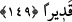

başka. Allah her şeyi işitici ve bilicidir.
Allah kötü sözün açıkça söylenmesini sevmez; Allah’ın bir şeyi sevmemesi, ona
buğzetmesinden kinâyedir. Yâni, “Allah, her hangi bir kimsenin başkası hakkındaki kötü
sözü açıkça söylemesini sevmez. “Ancak haksızlığa uğrayan başka.” Çünkü o,
kendisine zulmedene beddua etmek için sesini yükseltebilir ya da haksızlığa uğradığı
husûsu “Falan şahıs benim malımı çaldı veyâ gasbetti” gibi sözlerle olanları
açıklayabilir.
Denilmiştir ki bu, kendisine kötü söz söyleyene cevap verme hakkının olmasıdır. Yâni
kendisine kötü söz söyleyene, kişinin misliyle mukabele etmesi câiz görülmüştür. Daha
fazlası câiz değildir.
Anlatılır ki bir adam bir topluluğa misâfir oldu. Onlar ona bakıp ilgilenmediler,
karnını doyurmadılar. Onları şikâyet etti. Şikâyet ettiği için de paylandı. İşte bu sebeple
yukarıdaki âyet nazil oldu. “Allah,” mazlûmun yakarışını “işitici” ve zâlimin halini
“bilicidir.”
149- Bir iyiliği açıklar yâhut gizlerseniz veyâ bir kötülüğü (açıklamayıp)
affederseniz, şüphesiz Allah da ziyâdesiyle affedici ve kadirdir.
Hangi hayır olursa olsun ister fiilî olsun, ister kavlî “bir iyiliği açıklar yâhut
gizlerseniz veyâ bir kötülüğü affederseniz” mutlaka size bunun karşılığı verilecektir.
Âyette iyiliğin açıklanması veyâ gizlenmesi ile söze başlanması bağışlanma için bir
giriştir. Onun için ardından “Şüphesiz Allah da ziyâdesiyle affedici ve kâdirdir.”
ifadesi getirilmiştir. Bu ifâdeden anlaşılmaktadır ki asıl olan cezâlandırmaya gücü
yeterken affetmektir. Allah âsîleri cezâlandırmaya ve onlardan intikam almaya muktedir
olduğu halde çok affedendir. O halde intikam almaya gücü yettiği halde affetmek
sünnetullahtandır. Sizin de Allah’ın kanununa uymanız gerekir. Âyette mazluma, intikam
almak için ruhsat verildikten sonra güzel ahlak prensibine uyarak affetmesine teşvik
vardır. Hz. Ali (r.a) “İntikamı defetmede tek başına kalma.” buyurmuştur.
İntikam hissinin şiddeti
İnsandan yücelik devletini yok eder
Yücelik devletini mahvetmemen için
İntikam yolundan uzaklaş
Biliniz ki, Allah kötülüklerin ve ayıpların açıklanmasını sevmez. Ancak zararı büyük,
hile ve tuzağı çok olan bir zâlim bunun dışındadır. Onun kötülüklerinin açıklanması
câizdir. Bu sebeple Efendimiz (a.s.) şöyle buyurmuştur: “Fâsığın kötülüklerini anlatın